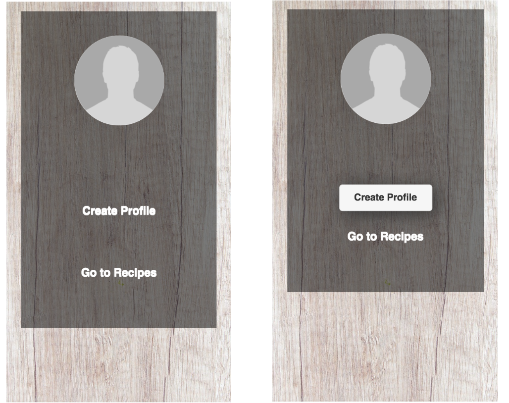

HealthDose is an mobile web application designed to provide recipes for middle-aged adults who have health
concerns or are at risk of health disease. This application works by having the user set up their profile and depending
on their inputs, will provide the related recipes that will fit their need(s).
HealthDose was created by two people (orginally three) in an HCI course at UC San Diego. The goal was to come up with a mobile web
application that would best suit the needs of middle-aged adults (ages 40+). During the process, I was responsible
for developing and designing the UI of the application. The process took 9 weeks, which consisted of needfinding, storyboarding,
paper prototyping, mockup, interactive prototypes, user testings, and online experiments.
Needfinding
Needfinding began with the team brainstorming on what type of application would best fit the population of adults who were ages 40 and older. We eventually narrowed it down to the idea that as people age, they become more prone to health disease and the best way to fix that is to create an application that will provide them with healthy recipes. We then created a specific task list which consists of morning activities, breakfast, and time efficiency. This then leads to our user interviews in which we asked middle-aged individuals a series of questions. These questions include:
- Do you eat breakfast in the morning?
- If so, do you make your own breakfast?
- Do you ever rush to prepare your breakfast?
- If you don't make your own breakfast, where do you buy your breakfast and why?
- Do you think breakfast is important for you?
- What do you think should be included in a well balanced healthy breakfast?
From the interviews, we found that these middle-aged adults are usually in a hurry to head out for work in the morning. This leads to them not having enough time to prepare a well balanced healthy breakfast. To make up for the time, they will prepare their breakfast the night before and cook what needs to be cooked in the morning. These middle-aged adults will often time feel rushed and would sometimes have to buy breakfast at a local drive thru, which isn't very healthy. We came to a conclusion that the application should include healthy recipes with time efficient instructions and location finder to locate the nearest restaurants with healthy meals.
Storyboarding
With specific features in mind, we started the storyboarding process in which we created drawings of how our application
might work in the real world.
The first storyboard shows a middle-aged individual with diabetes who needs to follow a diabetic diet. He uses the applications feature which
recommends breakfast recipes for those with certain health concerns. He finds the recipes he is looking for quickly and has plenty of time to
prepare.
The second storyboard shows an individual who is running late for work and has to buy her breakfast on-the-go. She uses the feature in the
application that locates restaurants with healthy meals which are along the path to her workplace. She orders the food within the application
and picks it up at the restaurants drive thru with no time wasted, then heads straight for work.
Storyboard three also shows an individual who is running late for work. Since she haven't prepared anything, she needs to find a quick recipe
within the application to prepare. She finds a highly nutritious recipe that does not require many tools to make and ends up having more than
enough time to get ready for work.
These storyboards consists of different user scenarios with the application features benefiting each user's needs. They help us better understand
how our application can be used and more importantly what would be the best features to implement.
Paper Prototyping
Following the storyboarding process, we decided to create paper prototypes for the functions in storyboard #1 and storyboard #2, as those seem to fit the idea
of our application the best.
In paper prototype #1, we created a function that outputs recommended recipes for the users based on the data they input. Within this function, users have the
ability to filter the recipes based on time required to make the recipes and their food allergies. On the home screen, users will see features such as
daily recommendations of recipes, a search bar, and the top 3 health concerns.
Following the creation of this prototype, we decided to test it's usability through user testing. However, we were only able to test this prototype on
one person. After the user testing, we found that some features, such as the filter for time required to make recipes might cause implementation issues. The
food allergy filter was also in an awkward place as it would've been better if it was added to the section where users create their profile.
Another usability problem we found is that the home screen was not flexible enough for users to find recipes. There were no direct button to a list of recipes for
the users to view.
For prototype #2, we created a function with similar features to those such as Google Maps and Yelp. This function allows users to find restaurants that provides
healthy breakfast or other meals that are along the path to their workplace. Within this function, users are able to select the restaurant and order the food they
want. Upon confirmation, the function will show the progress of the meal and when the user can pick up the food they ordered.
There were no user testing done for this function as we have already decided to implement the prototype #1 for our mobile web application. This prototype however,
was not gone to waste as it will allow us to implement additional features into our application once the current functionalities are complete.
Mockup & Interactive Prototype
During this stage in the process, we found many usability issues and features that we wanted to change. It's also where we changed a majority of the functionality of our application due
to time constraints and deadlines, since our team only consisted of 2 people in a 3 person project. It was also due to the fact that I was the only one who was able to work
on the front end of the application.

For this interactive prototype, we were asked to create the main componenets of our application. After doing so, we put it through a user test to find usability issues. We found that the home screen
caused many usability problems with lack of signifiers. Users were confused as to what to do on that page or where they should even begin.
The recommended link also seemed strange to the users as they did not know if it was a useful link, which is one of the core functions of this application. Overall, this interactive prototype just
did not provide visibility and flexibility for our users.
This then leads to our redesign of the interactive prototype and a complete change in funtionality of our application. Previously, the idea was to provide user's with different
options to find recipes. These options include a recommendeded list of recipes, a search option for them to look for recipes of their choosing, and a top health concern section where they
will find recipes for the current top health risks. In the redesign we removed most of those features. The users will now create their profile, input their information along with health concern, and the
application will output related recipes. For the redesign, we added a landing page where the users will end up after logging into the application. This section is basically their home page,
which leads to a page where they will create their profile. The create profile page is where the users will enter their health concern and other details about themselves. After that, they will continue on to
the recipe page where they will have recipes filtered to their health concern. They are then able to click through each recipe card and view the cooking instructions for those recipes.
We tested this interactive prototype and again found usability problems. The landing page did not have clear signifiers as to what the users should do. They see "Edit profile" and are confused as
to whether a profile has already been created for them. The create profile page was also confusing for the users. Although it's not shown in the pictures, when you scroll down on that page, it shows
the data that you input when they create their profile. Since there is no way to hide the input section, the users will likely miss that part of the page. This design still lacks visibility and flexibility for our users.
We then decided to add a "Create Profile" link and "Go To Recipes" link in the landing page. This allows the users to go directly to the recipes page to preview the recipes before they decide to create
their profiles. The create profile page was also changed. The input section where users input their data is now in a form of a pop up. This will allow for recognition and minimize lengthy screen. This design had
a slightly better feedback, so we decided to stick with it for the time being.
User Testing & Online Experiments
With the completion of interactive prototype out of the way, we then moved onto user testing and online experiments. This consist of A/B testing using google analytics where the users will be randomly
shown one of two versions of a design of the landing page (the users home page). We were to test which design would lead to greater amounts of clicks for the
"Create Profile" button. The idea is to have our users to create their profile first before doing any other tasks. (Note: First photo is the original and second photo is the redesign.)

We ran the test for around 24 hours in which we asked about 20 users to use our mobile web application. After the experiment concluded, we analyzed the data to see which design would best suit our final
design. From viewing the data, we tested 23 users, in which 11 of those users were sent to the original design page. Within these 11 users, 54.55% of them clicked on the "Create Profile" link and 45.45%
clicked on the "Go To Recipes" link (Conversion rate: 100%). The other 12 users were sent to the redesign page where 83.33% clicked on the "Create Profile" button and 25% clicked on "Go To Recipes" link. (Conversion rate: 108.33%)
We analyzed these data and found that users were more likely to create their profile first before going to the recipes page when the button is more prominent. That is shown in the redesign of the landing page
where we changed the "Create Profile" link into a button. After this test, we decided to use the redesign for the final design of our application.
Final Design
Now with every design process out of the way, we finally moved onto the final step of our application. This process includes aesthetics and fixing of any errors that we were able to find. We found minor errors
here and there, in which I was able to fix within the time frame.
This then leads to the aesthetic part of our final application. Now, I wasn't much of a designer coming into this but I was able to pull inspirations from applications I have used before. Although I did not go searching
for applications, I came up with ideas through deep thinking, and writing them down while also narrowing down these ideas. Eventually, through trial and error, I found the design that I thought would work best for our
application. The Login screen was made to show the purpose of our application, which is to provide healthy recipes to the users. The home page was designed with resuts from the A/B testing we did. Here, the
"Create Profile" button was made to stand out from the the rest of the content to attract the users attention. The color scheme was recommended by my team member as green relates to the healthy aspect of
food. With that recommendation, I decided to altar the shade of green to bring uniqueness to our application. Everything else, such as the recipe pictures, were added to make the application more
visually appealing. With that being said, I present to you the final design of our application, HealthDose.
Conclusion
Overall, this application was a great learning curve for me. Coming into it, I only had basic web development skills, which includes HTML, CSS, and little, to no Javascript experience. Since I was solely responsible for all the front end development of this application, I was able to learn a lot from it and improve on those skills. I would say my proficiency level for each skill went up a level after this project. It also taught me how to fully develop an application from start to finish. This is very useful for my future projects. There were also many other obstacles that I came across, such as the errors we encountered. Some of these errors took time to fix and some were simple. With deadlines every week, managing time to fix these errors was hard but it allowed me to learn from it. It taught me how important time is when it comes to app development. This was a fun project and I would definitely be creating similar project in the near future.